Welcome to CDEV Engine's Documentation
This HTML Page contains the basics of modding in CDEV Engine, such as scripting, adding week, adding stages, and more.
The quickest way to get started is to check out the built-in mod which is the "FNF Test Mod" and
playing around with it.
The documentation is for reference if you want to know the specifics of
everything. These are the categories on the left, check them out!
there's no "TL;DR" here.
(Note: This documentation was made in CDEV Engine v.1.6.2, if you've downloaded an higher version
of CDEV Engine, expect some stuffs not included here.)
Making a new mod
1. Go to the Modding option from the main menu.
2. Select on the "Create a new mod" option.
3. Now give it a name and the description of the mod, and press on "Create Mod" button.
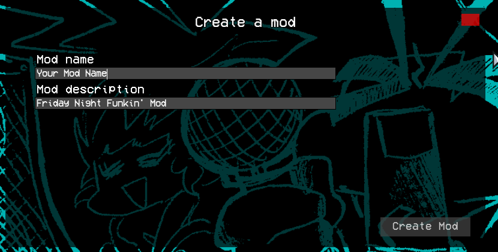After you done that, the engine will create the mod folder for you in /cdev-mods/ folder and you're ready for the next steps.
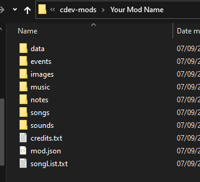Adding your song
(In this example, i'm adding a new song with name "cool-song")
First, you'll need a Chart File (.json), Instrumental, and Voices song files (.ogg).
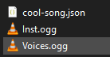Then, go to "cdev-mods/yourmod/songs/", and "cdev-mods/yourmod/data/charts/" and fill the "yourmod" with your mod's name, and make a folder inside of those 2 folders (songs & charts folder) with your song name on it.
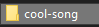After that, move / copy the json file of your song to "cdev-mods/yourmod/data/charts/".
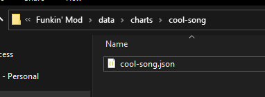Also, move / copy the song files of your song to "cdev-mods/yourmod/songs/".
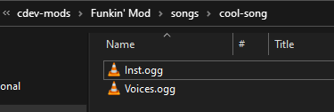Finally, open a txt file on "cdev-mods/yourmod/songList.txt", and then add your song name into the txt file
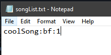(it should be in this format: songName:characterIcon:weekNumber
.)
After you done all the steps correctly, your song will be available on the Freeplay Menu
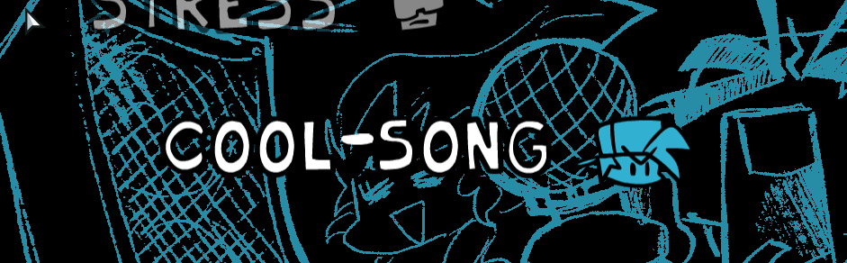Adding a new Character
Adding a character isn't that hard, especially if you've ever tried Psych Engine before. But here's the steps on how to add a new character anyways.
Required Files
You'll need a PNG and XML file of your character in order to make the character data, the file names should be the same.
Health icon image also required too, and it must be a 300x150 PNG file.
(if you wanted
your character to have a winning icon instead of just the defeat icon, make sure the size is 450x150
with normal, losing, and winning icon order.)
Put your character PNG and XML file in "yourmod/images/character", and your character Health icon in "yourmod/images/icons", with "yourchar-icon" file name.
Creating the character data
There are two ways to add a character, the first way is Playing a song from Freeplay and pressing 6
or 8 in gameplay (6 for player one, 8 for player two).
The second way is going through Modding
Option in Main menu, and selecting your mod and select "Character Editor.
In this case, i'll be adding my own character named "corecat".
This should be the first thing you'll see when opening the Character Editor.
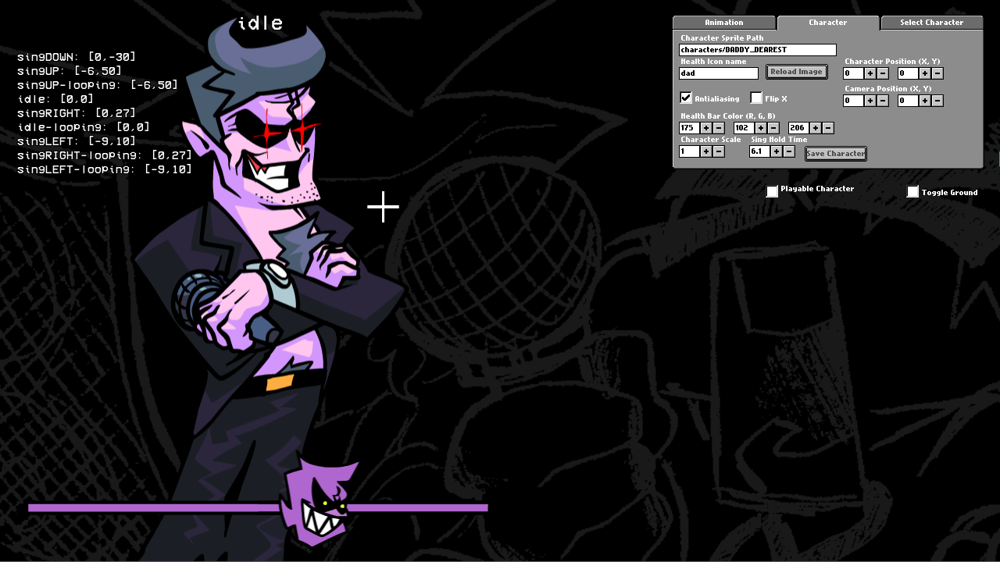1. Check / Uncheck the "Playable Character" before you do anything else, in my case, my character will be not playable. This step is important.
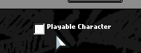2. Type your character png/xml file in the Character Sprite Path text box and type the Health Icon name in the text box (without the *-icon prefix!). Press the "Reload Image" to refresh the character.
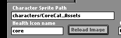3. Once it loaded, now you can change the character's settings. These are my settings.
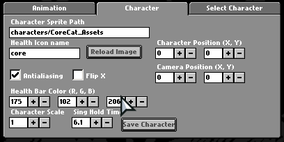4. Now all you need to do was just adding the animations and changing the offsets. Switch to "animation" tab and you'll see something like this.
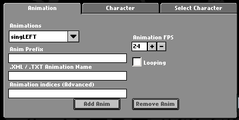W / A is used for changing animations, Arrow keys is used for offsets, and Space is used for Previewing the animation.
5. After you finished, press the "Save Character" button to save. (If you opened the Character Editor through a song, save the file to yourmod/data/characters/. but if you opened it from the modding screen, type your character's name and press save.)
Result
To load the character, go to Charting Screen and set your character as the player/opponent.

Adding a new stage
We'll going to make a new stage named "outside". The steps is pretty simple to do.
Opening the Stage Editor
1. Go to Modding menu from Main menu, and if you already have a mod, select "Open an existing mod", and if not, read this.
2. Select "Stage Editor" to start.
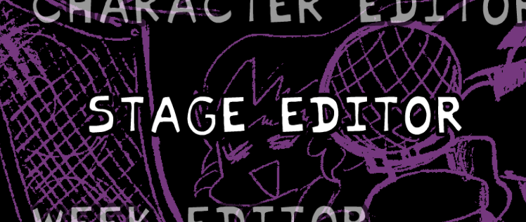3. When Stage Editor opened, you should be seeing something like this.
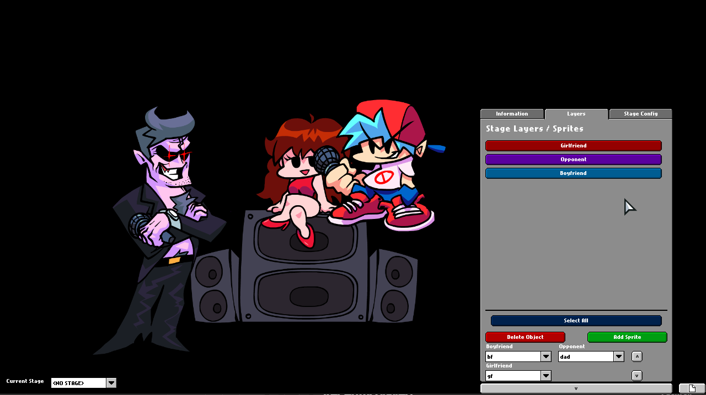(WASD is used for panning the camera, Mouse Wheel is used for camera zoom, Mouse Right Click for moving around an object.)
Adding a new bitmap sprite
1. Go to the "Layers" tab in this box, and select "Add sprite"
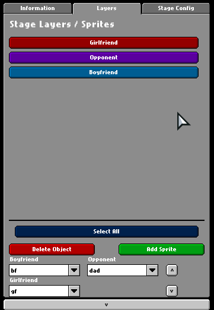2. Type in your Sprite PNG path on the "Path to sprite bitmap" text box, and give your Sprite a name. In my case, i'll use "core/bgAssets/city" in the path, and "Background" for the Sprite Name. After that, press "Add Sprite" button.
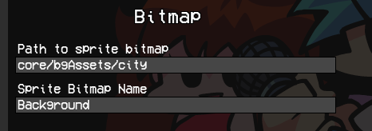(Note: The sprite png path already starts from "yourmod/images/", so all you need to do was just type in the PNG name / folder name without the .png extension.)
Adding a new sparrow sprite (animated)
1. Go to the "Layers" tab in this box, and select "Add sprite"
2. Select "Sparrow", type in your sprite PNG/XML path on the "Path to sparrow file" text box, and give your Sprite a name. In my case, i'll use "core/bgAssets/bgBoppers" in the path, and "Background Characters" for the Sprite Name.
3. Set your animation framerate, change your Animation type, and type in your animation name in your sprite xml file. (i'll use beat-force, and "bop" for the animation name.)
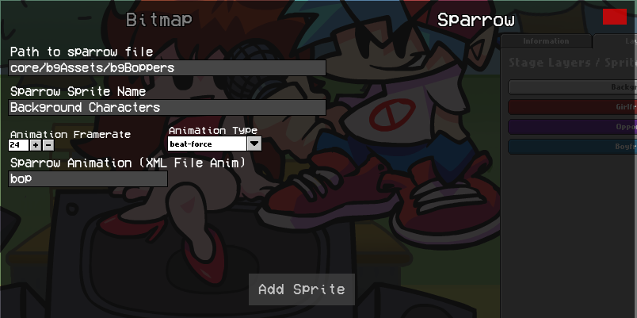(Note: The sprite png path already starts from "yourmod/images/", so all you need to do was just type in the PNG name / folder name without the .png extension.)
Changing the sprite options
1. If you added a new sprite, you'll notice that there's one new layer added with the name you put on the sprite.

2. To set the layer position where ever you want, press this up and down button on the Layers tab.
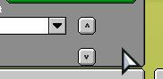(Remember: Pressing the down button will move the sprite forwards, and pressing the up button will move the sprite backwards.)
3. Check out the "Information" tab for more settings about the sprite.
Changing the preview characters
Just click on these dropdowns and select your character from there.
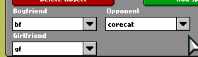Final Result
After you finished making the stage, press the save button bottom corner right of the game screen and give it a name.
To load the stage, go to your mod song, and load the stage from the charting menu.
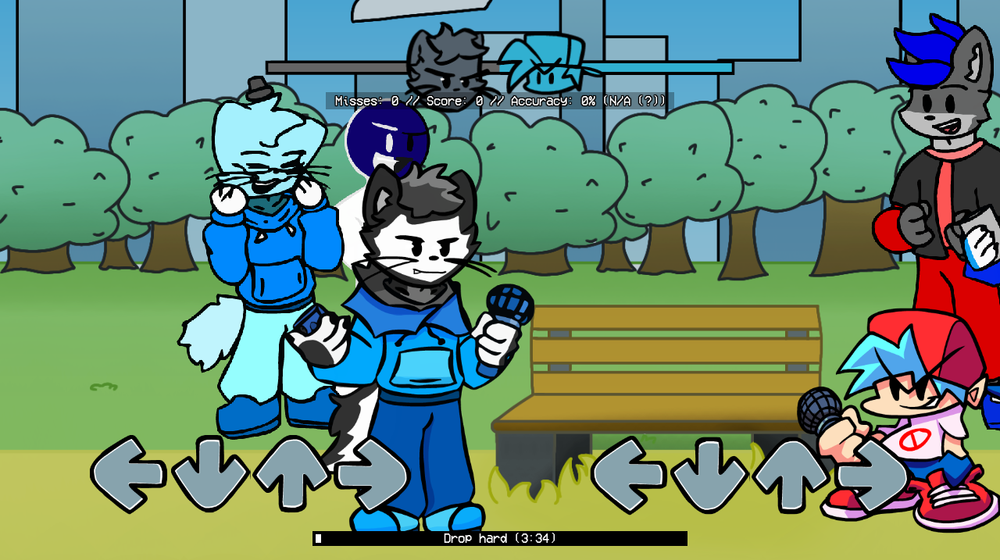Making a new week
We'll be making a new week here, it's a pretty easy thing to do.
Required files
To make a new week, you have to make sure you have the assets for it.
First file you need is the Week Sprite path, which is this image.
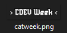Place that file under the yourmod/images/storymenu/ folder.
Another file you need is the Difficulty Sprites, it should be located on yourmod/images/storymenu/difficulty folder.
Opening the Week Editor
1. Go to Modding menu from Main menu, and if you already have a mod, select "Open an existing mod", and if not, read this.
2. Once you're on the Modding menu, select Week Editor to begin.
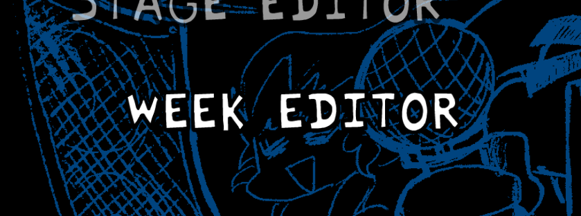3. You should be seeing something like this once you entered the Week Editor.
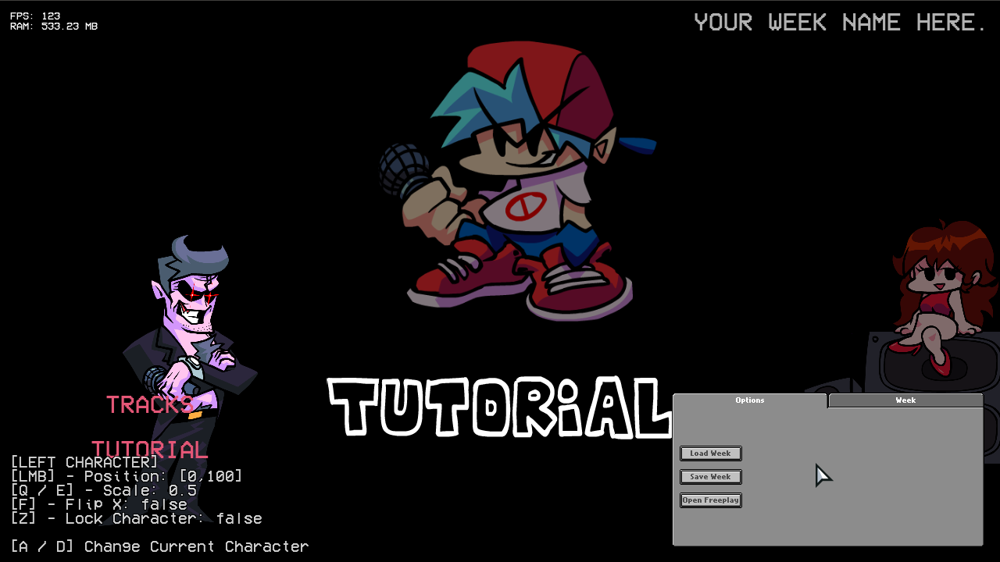Making the week
1. Switch to the week tab, and you'll be seeing something like this.
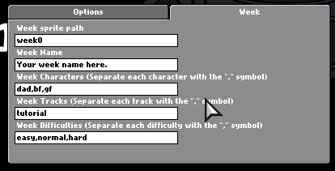2. Change the week sprite path to your sprite name, in this case, i'll be using my sprite called "catweek"
(Once you done writing your sprite name on the text box, you'll notice that the sprite on the week editor changed, that means you've done it correctly!)
3. Type in your week name, it'll be displayed on top corner right, i'll be naming it "CoreCat week"
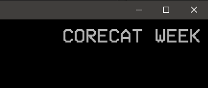4. For the characters part, type in your characters name, and separate them with "," (Note: Only 3 characters are allowed)
(CDEV Engine uses an existing Character JSON files for the week characters, so just type in your character's name based on yourmod/data/characters/ folder.)
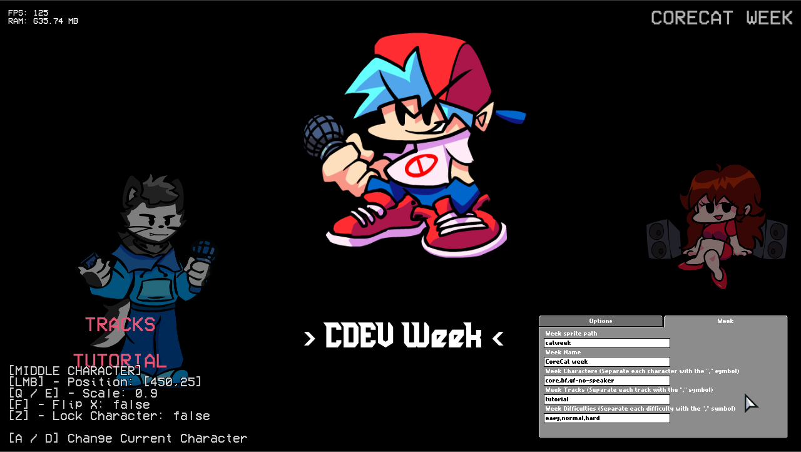5. Adjust the position, scale, flip x properties of your characters. (To adjust the position of your character, simply press & hold your character and move 'em)
(If you got a problem where you always end up moving the wrong character, make sure you've locked the character so it can't be moved)
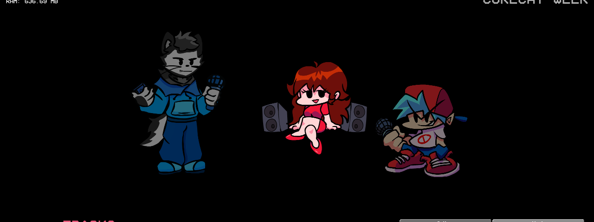6. Also type in your week songs, and the difficulty. Separate them with ",".
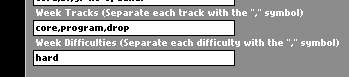Setting up the freeplay
1. Switch to the Options tab, and then press on "Open Freeplay".
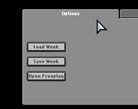2. Once you pressed the Open Freeplay button, you'll be moved to this screen.
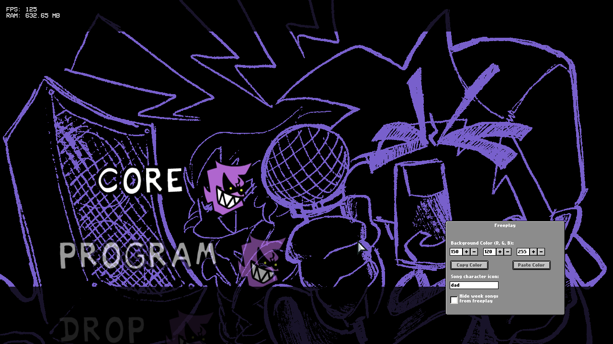(Use the UP and DOWN keys to navigate through the songs.)
3. Look at the "Freeplay" box, and change the Background color, which character that assigned to that song, and whether to hide these songs from the freeplay.
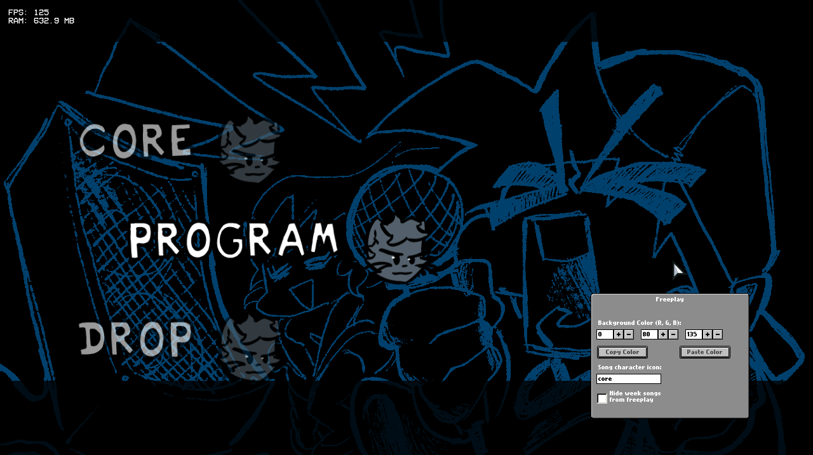Ending
Press ESCAPE to go back to the week editor, and then press the "Save Week" button and there you go! You have made your own CDEV Engine week!
How scripting works here
CDEV Engine uses HScript for mod scripting, HScript is Haxe script that can be executed during runtime
You might be asking: "Why HScript? Why not LUA?"
At first, CDEV Engine was going to use LUA as it's scripting language, but then i changed my mind and then using HScript instead.
If you're ever tried to make mods using Friday Night Funkin's Source Code, then Scripting on CDEV Engine would be easy for you.
HScript uses .hx extension, so make sure your script file ends with .hx so the engine can read and execute the script.
Without further ado, let's get on how does scripting works here.
Scripts used
There are only 3 scripts that used for your mod.
- State & Substate Scripts - This script is used for making custom states / substates, it's like a room for your objects. it's located on yourmod/ui/ folder.
- Song Script(s) - This script is used for a specific song and when it's currently being played. It should be placed under yourmod/data/charts/yoursong folder.
- Stage Script - This script will be used if the Song's stage is this script's file name, also make sure the script's file name matching with the stage's json file name.
- Custom Note Script - This script is used for custom note types.
Variables
There's plenty of variables that you can use on these scripts listed below. Check out Variables page.
Song Script
To create a song script, simply go to cdev-mods/yourmod/data/charts/yoursong folder and create a file with .hx extension.
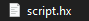Here are functions that's used for song script (sorted from called first to called last):
create
- Called first when the player enters()PlayState.createStage
- Called after the create() function and before stage & characters initialization, use this if you want to manually code your stages.()postCreate
- Called after the createStage() function / after game object initialization.()onStartCountdown
- Called before the countdown starts and if()enableCountdownistrue.onCountdown
- Called on song's countdown.(swagCounter:Int)swagCounter- Current countdown, from 0 to 4. (0 = three, 1 = two, 2 = one, 3 = go, 4 = song start)onStartSong
- Called after onCountdown function.()update
- Called on every frame update.(elapsed:Float)elapsed- Miliseconds passed since last frame.postUpdate
- Called after frame update.(elapsed:Float)elapsed- Miliseconds passed since last frame.p1NoteHit
- Called when the player hits a note (DEPRECATED, use(noteData:Int,isSustainNote:Bool)onP1Hitinstead).noteData- This note's direction. (0 = left, 1 = down, 2 = up, 3 = right)isSustainNote- Tells you if this note is a sustain note.p2NoteHit
- Called when the opponent hits a note (DEPRECATED, use(noteData:Int,isSustainNote:Bool)onP2Hitinstead).noteData- This note's direction. (0 = left, 1 = down, 2 = up, 3 = right)isSustainNote- Tells you if this note is a sustain note.onEventLoaded
- Called when an event is loaded & spawned.(name:String,value1:String,value2:String)name- The event's namevalue1- Event's Value1 parameter.value2- Event's Value2 parameter.onEvent
- Called when an event is called.(name:String,value1:String,value2:String)name- The event's namevalue1- Event's Value1 parameter.value2- Event's Value2 parameter.onNoteMiss
- Called when the player missed a note.(direction:Int)direction- The note's direction. (0 = left, 1 = down, 2 = up, 3 = right)onP1Hit
- Called when the player hits a note.(note:Note)note-Noteclass.onP2Hit
- Called when the opponent hits a note.(note:Note)note-Noteclass.stepHit
- Called on step counter update.(curStep:Int)curStep- Current song step counter.beatHit
- Called on beat counter update.(curBeat:Int)curBeat- Current song beat counter.onDestroy
- Called before()PlayStategets destroyed.onGameResumed
- Called after the game unpaused.()onGamePaused
- Called when the game paused & before the pause screen shows up.()onGameOver
- Called when the player's health is 0 / before game over screen shows up.()onEndSong
- Called when the current song finished playing.()
Stage Script
Here are functions that's used for stage script:
create
- Called after stage creation.()update
- Called on frame update.(elapsed:Float)elapsed- Miliseconds passed since last frame.beatHit
- Called on beat counter update.(curBeat:Int)curBeat- Current song beat counter.stepHit
- Called on step counter update.(curStep:Int)curStep- Current song step counter.
This one is a callable function.
getObject
- Returns(name:String):FlxSpriteFlxSpritebased onname, if sprite with namenamedoesn't exists, it will returnnull.name- Stage Sprite name to be returned.
Custom Note Script
Here are functions that's used for custom note script:
create
- Called after note creation.()update
- Called on frame update.(elapsed:Float)elapsed- Miliseconds passed since last frame.onNoteHit
- Called when the note gets hit.(rating:String,player:Bool)rating- This note's rating after getting hit, whether it's "sick", "good", "bad", "shit".player- Tells you who's hitting this note, iftruethen it's the player, but if it'sfalsethen it's the opponent.onNoteSpawn
- Called after the note gets spawned to the game.()onNoteMiss
- Called when the note is missed.()
These two is an callable function.
loadTexture
- Useful if you want to load a custom note texture, leave the(texture:String)texturevariable blank for default note skin.initialize
- You must call this function AFTER you called the()loadTexturefunction, if you called this first and not theloadTexturefunction, then it won't work.
Note: After you made a new custom note script, add this script below to your code:
function create() {
loadTexture("notes/NOTE_assets"); // Change the "notes/NOTE_assets" to your asset path.
initialize(); // Initialize the note.
}
Variables
These are lists of variables & functions that you can access using "ClassName.variableName"
PlayState
PlayState is where all the characters, stages, and stuff in, basically the main game of FNF.
Example Usage: PlayState.curStage
Basic Variables
(Note: These variables are written in this format: "variableName:Type")
curStage:String
- Current stage's name.SONG:SwagSong
- Current song's chart data.isStoryMode:Bool
- Tells you if the song is played through Story Mode.storyPlaylist:Array<String>
- List of current week's queued songs.weekName:String
- Current week's name.isPixel:Bool
- Tells you if the current stage is pixel stage.
Callable Functions
Example usage: PlayState.triggerEvent("Camera Force Pos", "-533", "260");
triggerEvent
- Useful if you wanted to execute an event through scripting.(name:String,value1:String,value2:String)name- The event's name that will be triggeredvalue1- Event's Value1.value2- Event's Value2.setDeathCharacter
- Useful if you want to change the death character and not the default bf.(char:String,disableFlipX:Bool)char- Death character name.disableFlipX- Whether to disable the FlipX property of your character.setDeathSongBpm
- Change the death song BPM.(bpm:Float)bpm- New BPM for the death song (gameOver.ogg).
Charcters Variables
(Note: These variables are written in this format: "variableName:Type")
dad:Character
- Opponent character.gf:Character
- Girlfriend character.boyfriend:Character
- Player Character.
Gameplay Variables
(Note: These variables are written in this format: "variableName:Type")
controls:Controls
- Player Controls.convertedAccuracy:Float
- Current accuracy (DEPRECATED, useaccuracyinstead).accuracy:Float
- Current accuracy.sick:Int
- Current sicks count.good:Int
- Current goods count.bad:Int
- Current bads count.shit:Int
- Current shits count.misses:Int
- Current misses count.randomNote:Bool
- "Randomize Note" Modifier.suddenDeath:Bool
- "Sudden Death" Modifier.scrSpd:Float
- "Scroll Speed" Modifier.healthGainMulti:Float
- "Health Gain Multiplier" Modifier.healthLoseMulti:Float
- "Health Lose Multiplier" Modifier.songSpeed:Float
- "Song Speed" Modifier.playingLeftSide:Bool
- "Play as opponent" Modifier.
UI / HUD Variables
(Note: These variables are written in this format: "variableName:Type")
notes:FlxTypedGroup<StrumArrow>
- All spawned notes.strumLineNotes:FlxTypedGroup<StrumArrow>
- All note receptors group.playerStrums:FlxTypedGroup<StrumArrow>
- Player note receptors group.p2Strums:FlxTypedGroup<StrumArrow>
- Opponent note receptors group.songPosBG:FlxSprite
- Time Bar's BG / Outline.songPosBar:FlxBar
- Time Bar.healthBarBG:FlxSprite
- Health Bar's BG / Outline.healthBar:FlxBar
- Health Bar.iconP1:HealthIcon
- Player's Health Icon.iconP2:HealthIcon
- Opponent's Health Icon.scoreTxt:FlxText
- Score, Misses, and Accuracy Text.botplayTxt:FlxText
- "> Botplay <" text object.
Camera Variables
(Note: These variables are written in this format: "variableName:Type")
defaultCamZoom:Float
- Default game camera's zoom.defaultHudZoom:Float
- DefaultcamHUDzoom.camHUD:FlxCamera
- Camera object that handles UI / HUD elements.camFollow:FlxObject
- Current game focus camera position.camZooming:Bool
- Tells you if the camera can zoom on 4th beat (Will turn totruewhen the opponent hits a note).cameraPosition:FlxObject
- Current camera offset position.forceCameraPos:Bool
- Whether to force current camera position to certain point.camPosForced:Array<Float>
- Forced camera position point (RequiresforceCameraPosvalue totrue).
Configuration Variables
(Note: These variables are written in this format: "variableName:Type")
enableNoteTween:Bool
- Whether to enable / disable the note receptors slide-in animation in freeplay.enableCountdown:Bool
- Whether to enable / disable countdown before the song starts.enableEditors:Bool
- Whether to enable / disable Editor shortcuts (Like 6,7,8 keys).
Paths
Paths is useful for loading assets on your mod folder.
Example usage: Paths.font("vcr.ttf");
Usage:
Paths.VariableName
Functions
- font(name:String) - Returns font from yourmod/data/font/ folder.
- sound(name:String) - Returns sound from yourmod/sounds/ folder.
- music(name:String) - Returns music from yourmod/music/ folder.
- image(name:String) - Returns image from yourmod/images/ folder.
- music(name:String) - Returns music from yourmod/music/ folder.
- getSparrowAtlas(name:String) - Returns SparrowAtlas from yourmod/images/ folder.
- currentModFolder(path:String) - Returns path from Your Mod folder.
Note
Note.hx class.
Usage:
Note.VariableName
noteType
- The Note's Type. (String, Read only)strumTime
- The note's strum time. (Float)mustPress
- Tells you if is it a player note or not. (Bool)noteData
- Note's Column (0-4). (Int)canBeHit
- Tells you if the note is hitable. (Bool)tooLate
- Tells you if you missed the note. (Bool)wasGoodHit
- Tells you if you hitted the note. (Bool)prevNote
- Another Note before This Note. (Note)isSustainNote
- Tells you if it's a sustain note. (Bool)noteType
- The Note's Type. (String)xAdd
andyAdd
- X and Y addition position of the note. (Float)offsetX
andoffsetY
- X and Y offset position of the note. (Float)offsetAngle
- Angle offset of the note. (Float)multAlpha
- Alpha multiplier of the note. (Note)followX
andfollowY
- Whether to follow the X of the note receptors, and to follow the Y of the song position. (Bool)followAngle
andfollowAlpha
- Whether to follow the Angle / Alpha of the note receptors. (Bool)rating
- The note's rating (the default is "shit", changed after the player hits the note). (String)strumParent
- This note's note receptor. (StrumArrow)
Character
Character is a class that handles characters like BF, and GF.
Usage:
Character.VariableName
- objects
ClassName
Class Description
Usage:
ClassName.VariableName
- objects